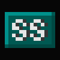

| アイコン |
意味 |
 |
特殊クラススキル
「クラス・スキル装備」で装備する必要がない。
EP による制限はないが、一度使用すると再使用まで一時間が必要。 |
|  |
特殊クラススキル
「クラス・スキル装備」で装備する必要がある。
仕様に必要なEP や再使用までの待ち時間などの制限がある。。 |
 |
特殊武器スキル
「クラス・スキル装備」で装備する必要がない。
特定の条件を満たすと自動的に発動し、その条件にEP や時間は含まれていない。 |
 |
特殊クラススキル
「クラス・スキル装備」で装備する必要がない。
再使用までに一定時間待つだけではなく、特定のクラスと特定の武器を装備しないと使えない。 |
 |
特殊クラススキル
「クラス・スキル装備」で装備する必要がない。
特定のクラスと特定の武器を装備し、ある秘薬を使った場合において効果が自動的に発動する。 |